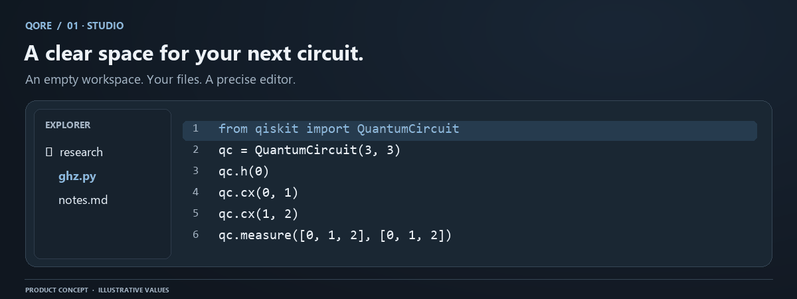

Studio: editing and workspace organization
Studio is the authoring surface for QORE. It combines Explorer, Monaco editing, file paths, execution actions, settings, and the lower command console. Its job is to keep the ident
Conceptual workflow. Numerical evidence and save status come from your actual QORE session.
Studio is the authoring surface for QORE. It combines Explorer, Monaco editing, file paths, execution actions, settings, and the lower command console. Its job is to keep the identity of the active source clear while letting you move into numerical inspection or compiler review without losing editing context.

A deliberate starting point
A new browser workspace opens with an empty Explorer. The welcome logo animates and the welcome closes automatically; no click-to-enter action is required. Get Started creates a single three-qubit learning circuit only when selected. Create blank file gives you an empty buffer. These are different choices, so onboarding never silently populates the workspace with unrelated demonstrations.
Files created through Explorer remain editable browser-workspace records when saved. They are distinct from named backend projects and immutable Ledger experiments. A workspace file is editable working material; a Ledger snapshot records an experiment at a particular time. Treating the two as separate makes it possible to keep improving source without rewriting past results.
Explorer and paths
Explorer supports file and folder creation, selection, rename, deletion, and organization. Selecting a file opens its source in the editor. A file has a stable identifier even when its path changes. Folder renames update descendant paths atomically on the server, so a subtree is either moved consistently or left unchanged.
Paths are relative to the account workspace. A path such as research/qaoa.qasm is a private database entry, not a route to an arbitrary server file. The visible path and console pwd action identify the active source. JSON and Markdown can be edited as workspace content, but quantum execution remains limited to supported circuit source.
Before renaming a populated folder, finish pending saves. Another tab can change a descendant, which advances the folder's relevant version and may make the rename stale. Resolve a version conflict rather than assuming a partial local tree represents the server. Read workspace recovery for the database semantics.
Editing behavior
Monaco supplies syntax-aware editing and a familiar code surface. The editor runtime loads when needed after a file is opened, reducing the initial workbench load. Supported settings adjust editing behavior; disabled settings explain that they are not wired rather than implying that every preference affects execution.
The application uses one permanent graphite palette with consistent contrast, font weight, rounded glass surfaces, and focus treatment. This avoids different product views interpreting a theme setting differently. Use editor preferences for readability, and keep code legible when a laptop viewport reduces available width.
Source edits invalidate attached live parse, simulation, and optimization context. This rule is essential: an old histogram must not appear to be output from newly typed code. Historical records remain in the Ledger. If you want to compare before and after, save distinct evidence and label it, rather than relying on whichever chart was last visible.
Save confirmation and concurrent editing
Browser storage is the authority for editable Explorer source in the account-free release. The server workspace API separately protects versioned records and evidence. Wait for visible saved state before closing a tab, and export important source before clearing site data or moving to another browser profile.
Each stored entry has an integer version. A changed write to an existing entry must match the server version; otherwise it returns a conflict. An identical retry is idempotent, so a connection retry does not create a duplicate edit. A trashed identifier cannot be resurrected through an ordinary save; use restore within the recovery window.
If a conflict occurs, preserve the current buffer, inspect the newer server text, and choose how to reconcile them. Do not clear browser storage as the first response, because the outbox may contain the only copy of unsynchronized changes. The current quota is 1,000 entries including Trash, 16 MiB aggregate source, and 32 KiB per file.
Execution from the editor
Run Kernel sends the active circuit and selected settings to the backend. Parsing and simulation happen in the bounded circuit runtime, not in Monaco or unrestricted browser Python. The backend returns structured results or a sanitized error with a useful location where possible.
For a minimal compatible file:
from qiskit import QuantumCircuit
qc = QuantumCircuit(1, 1)
qc.h(0)
qc.measure(0, 0)
This predicts equal ideal probabilities. Choose shots and seed, run, then read the actual output in Lab. Adding an unsupported import does not install a capability; it should produce a clear source error. The language reference lists supported construction patterns and operations.
Panel layout and console
Lab and Forge occupy the workspace beside Explorer. Closing Explorer expands the main view with a restrained transition. The assistant opens in a dedicated secondary bar, keeping explanations adjacent to the current task. The lower console has terminal, output, problems, and debug information drawn from current application evidence.
At smaller widths, prioritize the panel relevant to the task. A dense matrix benefits from closing auxiliary bars. A long error needs its own scroll region rather than being clipped by the outer layout. Reduced-motion preferences should suppress decorative movement where supported; the scientific meaning does not depend on animation.
Deletion and safety
Delete moves an entry into Trash for 48 hours. Undo restores the last deleted file or folder batch, while Trash exposes other recoverable entries. Folder restore validates all destinations before changing any record. If a destination is occupied, nothing is partially restored.
Active source has no automatic expiry. Deleted content becomes inaccessible at the exact 48-hour cutoff and is physically purged on the cleanup schedule. This is separate from provider backups. Export important work before major reorganizations, and sign out on shared devices so the next account does not inherit visible private state.
Troubleshooting Studio
If a selected file appears blank, verify the account, path, and save state before creating another file with the same name. If typing is slow, test a smaller source and close expensive visual views; a 32 KiB file bound does not mean every graphical rendering has equal cost. If results vanish after an edit, that is the intended stale-evidence protection. If a rename fails, inspect conflicts and synchronize outstanding writes before retrying.